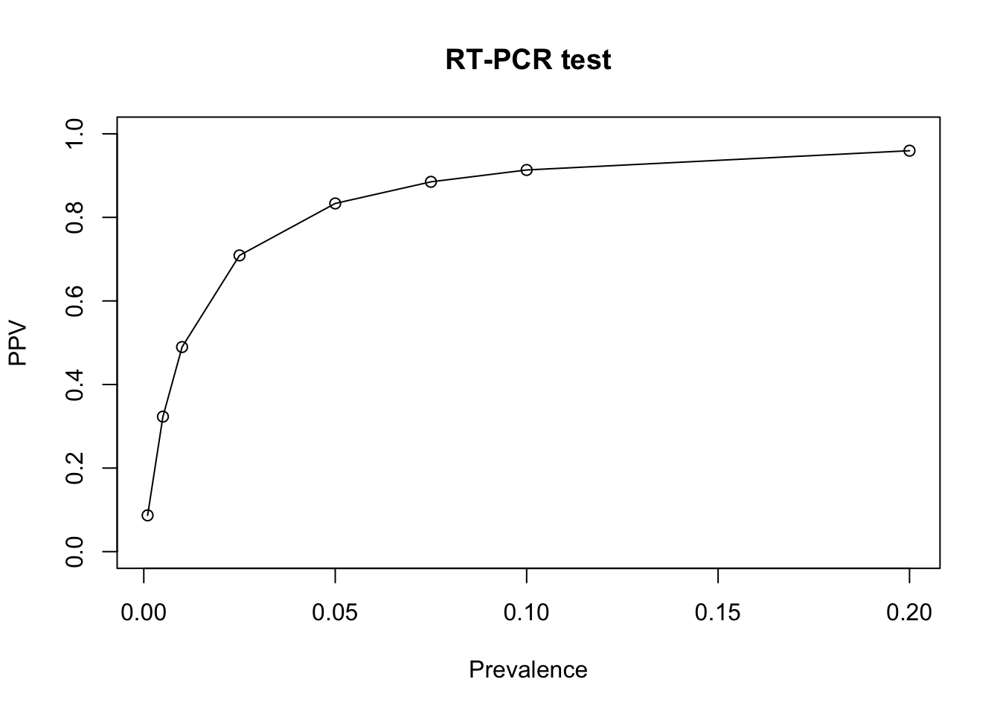
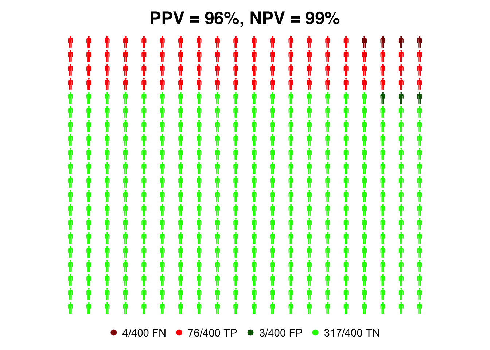
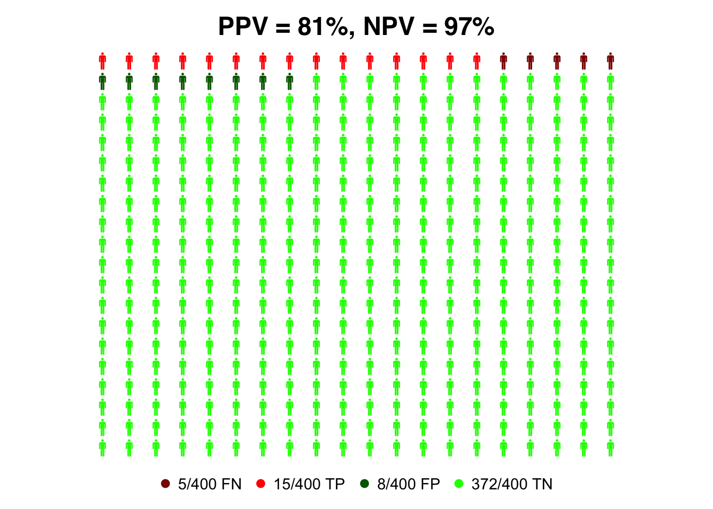
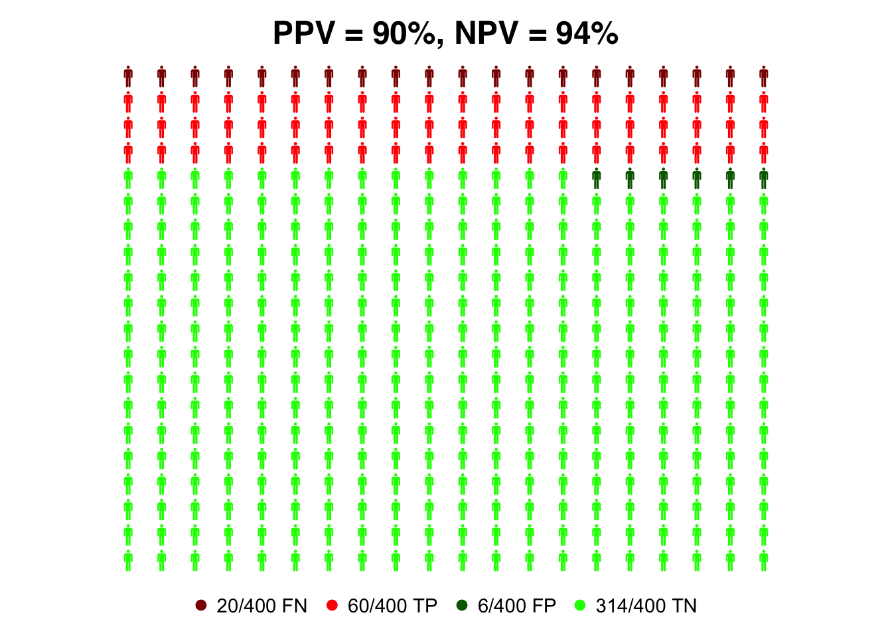
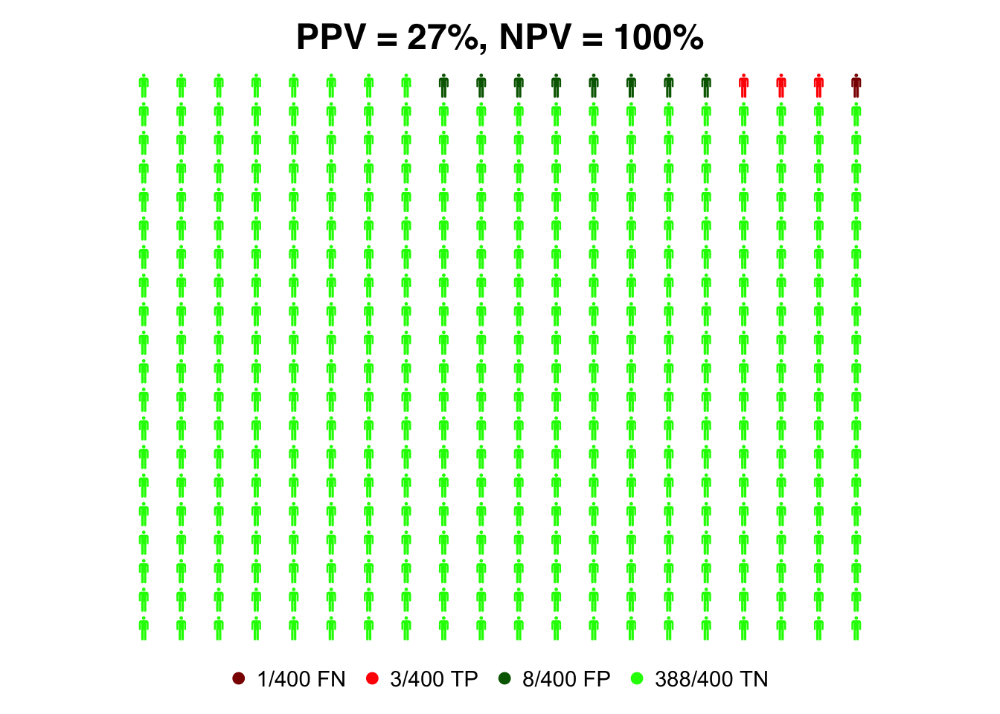

sens_pcr=0.95 #sensitivity of the RT-PCR test
spec_pcr=0.99 #specificity of the RT-PCR test
sens_ant=0.75 #sensitivity of the rapid antigen test
spec_ant=0.98 #specificity of the rapid antigen testSensitivity and Specificity of COVID-19 test
In this R lab we will practice with the concepts of sensitivity and specificity of COVID-19 test. The actual sensitivity and specificity values can be very different for different types of tests (for example RT-PCR vs rapid antigent tests). Besides the technical performance of the test, other aspects like changes in viral load along the disease course and between individuals can also play large roles. For this exercise, we will assume the following values:
RT-PCR test: sensitivity 95% and specificity 99%.
Rapid antigen test: sensitivity 75% and specificity 98%.
We start by saving these values in variables.
Calculation of PPV and NPV
Next, we will compute PPV and NPV for both COVID-19 test types. We can use the formulas obtained using Bayes’ law, but besides the values of sensitivity and specificity of each test, we will need the prevalence of the population that we are testing.
\[ PPV = \frac{\text{sens} \cdot \text{prev}}{\text{sens} \cdot \text{prev} + (1-\text{spec}) \cdot (1-\text{prev})} \]
\[ NPV = \frac{\text{spec} \cdot (1-\text{prev}) }{(1-\text{sens}) \cdot \text{prev} + \text{spec} \cdot (1-\text{prev})} \]
Let us first assume a relatively high COVID-19 prevalence of 10% and compute PPV and NPV for the RT-PCR test.
## RT-PCR test
prev=0.1 #prevalence
#compute PPV for RT-PCR test
PPV_pcr=(sens_pcr * prev)/(sens_pcr*prev + (1-spec_pcr)*(1-prev))
#compute NPV for RT-PCR test
NPV_pcr=(spec_pcr *(1- prev))/((1-sens_pcr)*prev + spec_pcr*(1-prev))
print(PPV_pcr) #print PPV for RT-PCR test[1] 0.9134615print(NPV_pcr) #print NPV for RT-PCR test[1] 0.9944196Next, we assume the same prevalence and compute PPV and NPV for the rapid antigen test.
## Rapid antigen test
prev=0.1 #prevalence
#compute PPV for RT-PCR test
PPV_ant=(sens_ant * prev)/(sens_ant*prev + (1-spec_ant)*(1-prev))
#compute NPV for RT-PCR test
NPV_ant=(spec_ant *(1- prev))/((1-sens_ant)*prev + spec_ant*(1-prev))
print(PPV_ant) #print PPV for RT-PCR test[1] 0.8064516print(NPV_ant) #print NPV for RT-PCR test[1] 0.9724366Effect of Prevalence
COVID-19 prevalence oscillated very much during the pandemic and was very different depending on the specific locations. It is interesting to see how PPV and NPV depend on the prevalence. For that, we define a vector of different prevalences and apply the previous formulas to obtain PPV and NPV for all the prevalences in that vector.
## RT-PCR test
# vector containing different prevalence values
prev_vector=c(0.001,0.005,0.01,0.025,0.05,0.075,0.1,0.2)
#compute PPV for RT-PCR test
PPV_pcr=(sens_pcr * prev_vector)/(sens_pcr*prev_vector + (1-spec_pcr)*(1-prev_vector))
#compute NPV for RT-PCR test
NPV_pcr=(spec_pcr *(1- prev_vector))/((1-sens_pcr)*prev_vector + spec_pcr*(1-prev_vector))
print(PPV_pcr) #print PPV for RT-PCR test[1] 0.08683729 0.32312925 0.48969072 0.70895522 0.83333333 0.88509317 0.91346154
[8] 0.95959596print(NPV_pcr) #print NPV for RT-PCR test[1] 0.9999494 0.9997463 0.9994901 0.9987067 0.9973489 0.9959217 0.9944196
[8] 0.9875312Note that the outputs are vectors containing all the PPV and NPV values for different prevalences. We can easily make a plot to observe how the PPV value changes with the prevalence.
plot(prev_vector, PPV_pcr,
ylim = c(0, 1), #set the y axis range between 0 and 1
main="RT-PCR test",
xlab="Prevalence",
ylab="PPV",
type='o') # plot the data points with circles and joint them with lines
We see that for low prevalence, PPV becomes very low. This can be a problem in mass COVID-19 screening as the majority of test lead to false positives.
Next, we do a plot to observe how the NPV changes with the prevalence
plot(prev_vector, NPV_pcr,
ylim = c(0, 1), #set the y axis range between 0 and 1
main="RT-PCR test",
xlab="Prevalence",
ylab="NPV",
type='o') # plot the data points with circles and joint them with lines
Exercise: Prevalence plot for rapid antigen test
Generate the same plot as above for the rapid antigen test.
Visualization using personograph
In this section we will use a package called personograph to further visualize the influence of sensitivity, specificity and prevalence on the interpretation of COVID-19 test results. To install the package run the following command:
install.packages("devtools")
If successful, continue with this command:
devtools::install_github("joelkuiper/personograph").
# if the package personnograph is correctly installed, you can load it with the following command
library(personograph)Loading required package: grImportLoading required package: gridLoading required package: XMLIf successful, you can continue and generate the plots. But if you run into problems installing the package, you have to try solving those before.
The inputs to the package personograph are two lists, one containing the number of false negatives (FN), true positives (TP), false positive (FP) and true negatives (TN); The second list contain the colors we want to use to plot FN, TP, FP and TN. In the next code chunk, we define the prevalence, compute PPV, NPV and generate both lists:
prev=0.2 #prevalence value
#compute PPV for RT-PCR test
PPV_pcr=(sens_pcr * prev)/(sens_pcr*prev + (1-spec_pcr)*(1-prev))
#compute NPV for RT-PCR test
NPV_pcr=(spec_pcr *(1- prev))/((1-sens_pcr)*prev + spec_pcr*(1-prev))
# building a list with the values of FN, TP, FP and TN
data=list(FN = (1-sens_pcr)*prev, TP = sens_pcr*prev, FP = (1-spec_pcr)*(1-prev), TN = spec_pcr*(1-prev))
# bulding a list containing the colors that we want to plot FN, TP, FP and TN
colorlist = list(FN = "darkred", TP = "red", FP = "darkgreen", TN = "green")Next, we run the command personograph using the two lists we generated before as inputs. In addition, we specify the total number of person icons to be displayed, the x and y dimensions of the plot and a figure title.
suppressWarnings( # we use this command to suppress an output warning
personograph(data,
colors = colorlist,
n.icons = 400,
dimensions = c(20, 20),
fig.title = paste0("PPV = ", round(100*PPV_pcr), "%, NPV = ", round(100*NPV_pcr), "%")
)
)
We repeat the plot with a lower prevalence of 1%.
prev=0.01 #prevalence value
#compute PPV for RT-PCR test
PPV_pcr=(sens_pcr * prev)/(sens_pcr*prev + (1-spec_pcr)*(1-prev))
#compute NPV for RT-PCR test
NPV_pcr=(spec_pcr *(1- prev))/((1-sens_pcr)*prev + spec_pcr*(1-prev))
# building a list with the values of FN, TP, FP and TN
data=list(FN = (1-sens_pcr)*prev, TP = sens_pcr*prev, FP = (1-spec_pcr)*(1-prev), TN = spec_pcr*(1-prev))
# bulding a list containing the colors that we want to plot FN, TP, FP and TN
colorlist = list(FN = "darkred", TP = "red", FP = "darkgreen", TN = "green")
suppressWarnings( # we use this command to suppress an output warning
personograph(data,
colors = colorlist,
n.icons = 400,
dimensions = c(20, 20),
fig.title = paste0("PPV = ", round(100*PPV_pcr), "%, NPV = ", round(100*NPV_pcr), "%")
)
)
Exercise: Personograph plots for rapid antigen test
Generate the same plots as above for the rapid antigen test.
prev=0.2
data=list(FN = (1-sens_ant)*prev, TP = sens_ant*prev, FP = (1-spec_ant)*(1-prev), TN = spec_ant*(1-prev))
colorlist = list(FN = "darkred", TP = "red", FP = "darkgreen", TN = "green")
#compute PPV for RT-PCR test
PPV_ant=(sens_ant * prev)/(sens_ant*prev + (1-spec_ant)*(1-prev))
#compute NPV for RT-PCR test
NPV_ant=(spec_ant *(1- prev))/((1-sens_ant)*prev + spec_ant*(1-prev))
suppressWarnings( # we use this to suppress a output warning
personograph(data,
colors = colorlist,
n.icons = 400,
dimensions = c(20, 20),
fig.title = paste0("PPV = ", round(100*PPV_ant), "%, NPV = ", round(100*NPV_ant), "%")
))
prev=0.01
data=list(FN = (1-sens_ant)*prev, TP = sens_ant*prev, FP = (1-spec_ant)*(1-prev), TN = spec_ant*(1-prev))
colorlist = list(FN = "darkred", TP = "red", FP = "darkgreen", TN = "green")
#compute PPV for RT-PCR test
PPV_ant=(sens_ant * prev)/(sens_ant*prev + (1-spec_ant)*(1-prev))
#compute NPV for RT-PCR test
NPV_ant=(spec_ant *(1- prev))/((1-sens_ant)*prev + spec_ant*(1-prev))
suppressWarnings( # we use this to suppress a output warning
personograph(data,
colors = colorlist,
n.icons = 400,
dimensions = c(20, 20),
fig.title = paste0("PPV = ", round(100*PPV_ant), "%, NPV = ", round(100*NPV_ant), "%")
))
Exercise: HIV testing
Repeat the whole analysis done for COVID-19 tests for a HIV test with sensitivity 98% and specificity 99.8% (see example in notes about Evaluation of Diagnostic Tests).